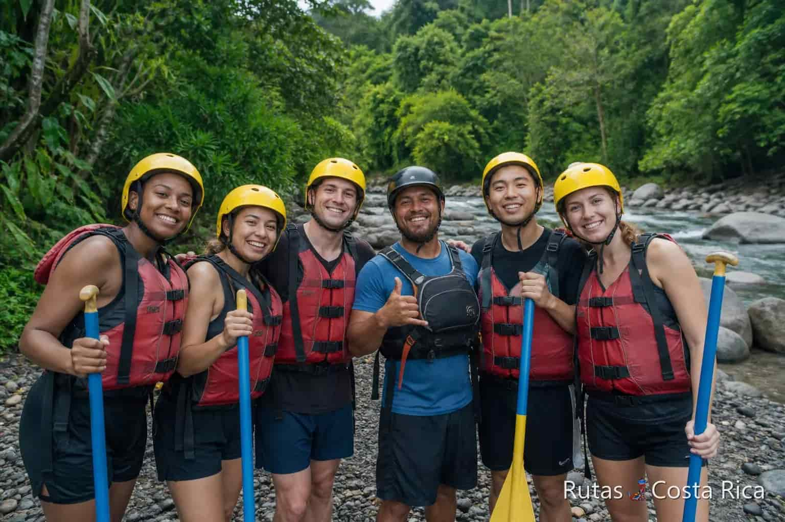

História
A Wave Riders nasceu da paixão pela aventura, pela natureza e pelo desejo de transformar momentos de adrenalina em experiências inesquecíveis. A ideia de criar a empresa surgiu quando seus fundadores perceberam o potencial do rafting como atividade turística e recreativa. Eles queriam proporcionar às pessoas a oportunidade de viver experiências emocionantes nas corredeiras, sempre com segurança, responsabilidade e respeito ao meio ambiente. No início, a empresa era pequena, contando com poucos equipamentos e uma equipe reduzida de profissionais.

Com dedicação, planejamento e compromisso com os clientes, a Wave Riders conquistou reconhecimento e cresceu ao longo dos anos. Atualmente, a empresa oferece experiências de rafting para diferentes públicos, desde iniciantes até pessoas que já possuem experiência em esportes aquáticos. Todas as atividades são acompanhadas por profissionais capacitados e realizadas com equipamentos adequados.